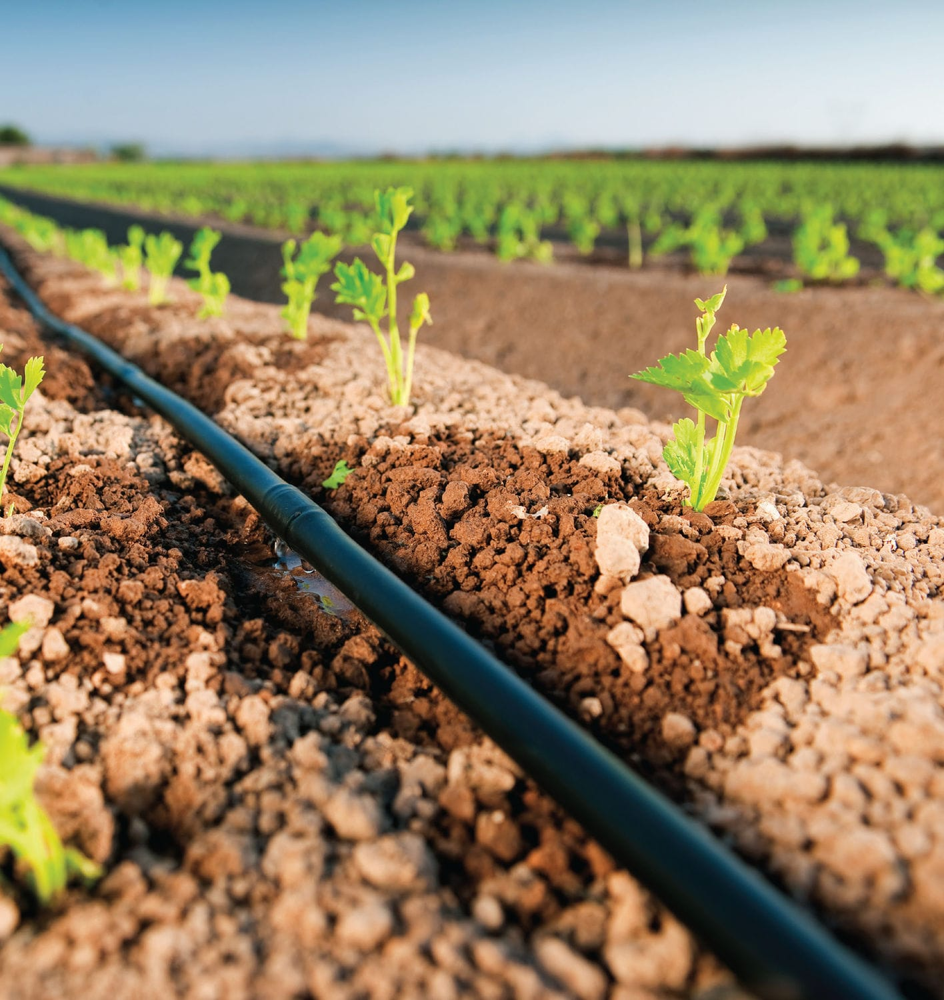
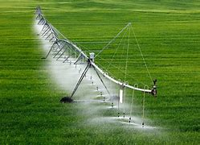
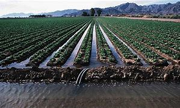
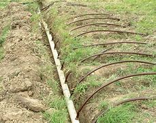

प्रभावी सिंचाई विधियाँ
1. ड्रिप सिंचाई:
विवरण: पाइप, ट्यूबिंग, और इमीटर्स के नेटवर्क के माध्यम से पौधों के रूट जोन में पानी को सीधे पहुंचाता है।
लाभ: अपशिष्टी और दौड़ के कारण पानी का हानि कम करता है, खरपतवार की वृद्धि को कम करता है, और सटीक पानी और पोषक तत्व वितरण की अनुमति देता है।
सर्वोत्तम उद्देश्य के लिए: उच्च मूल्यवान फसलें, बागवानी, बागान, और आँगनियों।
2. स्प्रिंकलर सिंचाई:

विवरण: पाइप और स्प्रिंकलर्स के एक प्रणाली के माध्यम से पानी को वितरित करता है जो प्राकृतिक वर्षा को अनुकरण करती है।
लाभ: विविधता के फसलों और परिसरों के लिए उपयुक्त है, बड़े क्षेत्रों को कवर कर सकता है, और स्थापित करना और प्रबंधित करना निर्माण के लिए सरल है।
सर्वोत्तम उद्देश्य के लिए: खेती, लॉन, और लैंडस्केप्स।
3. सेंटर पिवट सिंचाई:
विवरण: एक प्रकार की स्प्रिंकलर प्रणाली जो एक केंद्रीय पिवट बिंदु के चारों ओर घूमता है, जो एक वृत्ताकार सिंचाई पैटर्न बनाता है।
लाभ: दक्षिणी प्रयोग, श्रम की आवश्यकता को कम करता है, और विनियमित पानी आवेदन।
सर्वोत्तम उद्देश्य के लिए: बड़े पैमाने पर कृषि अभियांत्रिकी, विशेष रूप से समतल या हलके समतल क्षेत्रों में।
4. सतह सिंचाई:
विवरण: मृदा की सतह पर सीधे पानी लागू करने का काम है और इसे अपशिष्टी और गुरुत्वाकर्षण के माध्यम से वितरित किया जाता है।
प्रकार: फरो, बेसिन, और बॉर्डर सिंचाई।
लाभ: निम्न आरंभिक निवेश और ऊर्जा लागत, संचालन के लिए सरल।
सबसे अच्छा: पंक्तियों वाली फसलें, चरागाहें, और उपयुक्त मिट्टी प्रकार और ऊचाई के बागों।
5. उपसतह सिंचाई:
विवरण: धरातल के नीचे बुरी ड्रिप लाइन्स या धारित पाइप के माध्यम से पानी को सीधे रूप से रूट क्षेत्र में पहुंचाता है।
लाभ: वाष्पीकरण और सतही भागों के जल की कमी को कम करता है, खाद्य और पानी की सटीक वितरण की अनुमति देता है।
सबसे अच्छा: उच्च मूल्यवान फसल, घास, और वनस्पतियों के लैंडस्केप में, प्रतिबंधित पानी उपलब्धता वाले क्षेत्रों में।
6. स्वचालित सिंचाई प्रणाली:
विवरण: मिट्टी की नमी, मौसम की स्थिति, और फसल की आवश्यकताओं के आधार पर सिंचाई के कार्यक्रम को स्वचालित और उत्तम बनाने के लिए सेंसर, टाइमर, और कंप्यूटर नियंत्रण का उपयोग करता है।
लाभ: समय बचाता है, पानी की अपशिष्टता कम करता है, और सुनिश्चित करता है कि पौधे सही मात्रा में पानी प्राप्त करते हैं।
सबसे अच्छा: बाग़-बगीचे, लैंडस्केप, हरित घर, और निर्देशित खेती में।
जब सिंचाई विधि चुनने के लिए कारकों का ध्यान देना:
- मिट्टी का प्रकार: बालूदार मिट्टियाँ जल शीघ्रता से निकलती हैं और अधिक बार, छोटी मात्रा में पानी की आवश्यकता होती है, जबकि मृदा मिट्टियाँ पानी को लंबे समय तक धारित रखती हैं और अधिक बार, गहरे पानी की आवश्यकता होती है।
- फसल का प्रकार: विभिन्न फसलों की अलग-अलग पानी की आवश्यकताएँ और जल संघाति के प्रति सहिष्णुता होती है।
- जलवायु: स्थानीय मौसम पैटर्न, जलवायुविज्ञान और तापमान, सिंचाई की आवश्यकताएँ और विधियों पर प्रभाव डालते हैं।
- जल उपलब्धता: उपलब्ध जल की मात्रा और गुणवत्ता सबसे उपयुक्त सिंचाई विधि को निर्धारित कर सकती है।
- भूआकृति: भूमि की ढाल और लेआउट जल वितरण और पानी की धारा पर प्रभाव डालती हैं।
इन कारकों के आधार पर उचित सिंचIई विधि का चयन करके, किसान और बागवान संकुचित जल उपयोग, फसल के प्रदर्शन को बढ़ावा देने और विशेष जल प्रबंधन अभ्यासों में योगदान कर सकते हैं।